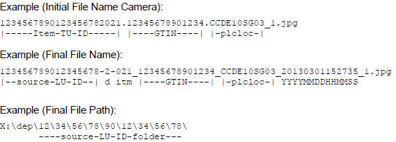
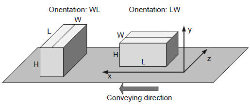
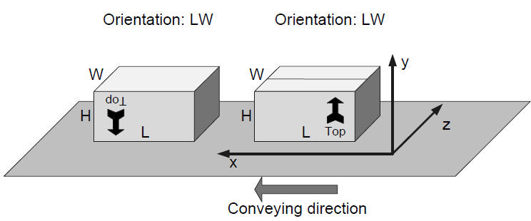

|
|
|
|
")

|

|
|
After de-palletizing and singulation, every item is properly oriented on the case conveyor and uniquely identified. Afterwards, different measuring stations collect various data which are then used to decide whether to store the item in the Multishuttle or to divert it to a reject lane.
Item identification is an optional process step where barcodes on an item are read and analyzed. This process is currently not integrated on the case conveyor, because a scan tunnel component is missing. But the interpretation of the barcodes on an item, which is the main part of the identification, is already used at manual de-palletizing stations.
On more part of identification is the optional process of photo taking. Thereby a photo for every individual item after de-palletizing and before re-orientation is taken and stored for later analyzing.
Afterwards the items are oriented in the storing direction, which is given during the Teach-In process. The last step is the check on the dimension and weight after the orientation.
|
|
|
|
For the identification of an item the following information are extracted from the barcodes placed on it:
|
Information |
Source | Description |
|---|---|---|
| SSCC | AI(00) length=18 | The items are tracked with the SSCC of the pallet from which they were de-palletized. Thus this information is not used in AMCAP scope. |
| GTIN | AI (01) length=14 | Global Trade Item Number. This is used to determine the trading unit. |
| GTIN of contained Trade Items | AI(02) length=14 | Is used to determine the correct trading unit. |
| Batch/Lot | AI(10) length=1..20 | The batch identifier. |
| Best Before Date | A(15) length=6 | Format: yyMMdd |
| Count of trade items | AI(37) length=1..8 | Number of base items (factor2base) |
| Net weight in kg | AI(310) length=7 | Product net weigth. |
| Length in m | A(311) length=7 | Product length in m |
| Width in m | A(312) length=7 | Product width in m |
| Height in m | A(313) length=7 | Product height in m |
|
INFO |
GS1 is completely supported by DCD, but only a part is needed for AMCAP. |
The identification throw the barcode is already used by the manual de-palletizing dialog. A scan tunnel which uses this concept also on the conveyor after the de-palletizing to identify the items is not yet available.
In case of automatic de-palletizing DCD announced the number of upcoming items of one type, for example "Next 20 pieces of SKU 4711 are coming". On the PLC side this is controlled and tracked. If there are less than announced items, the missing items are deleted automatically. And if there are more than the announced items, these are transported to the reject lane.
|
|
|
|
There can be different cameras taking photos on different locations.
Such images can help in clarification of errors which can be caused by:
The images are saved by the PLC on a defined file storage. A specific configuration of the MediaBackupCronjob is used to sort the images on another defined file storage.
There is a specific pattern to sort the image files in target folders. For example the path to the image file is constructed from the pallet id from which the item was de-palletized.

|
|
|
|
During the Teach-In process the operator decide in which orientation the item is to store. This information is saved in the palletizing quantity unit and send to the PLC after de-palletizing.
PLC knows also the dimensions and tolerance of each dimension. With these information PLC trigger the turning and toppling if needed and orientate the item in the desired orientation.
Afterwards the oriented item is measured and if the given dimensions are not inside the given tolerances, the item is send to the reject lane otherwise it is stored in MS buffer.

The image above shows, how the coordinates are used and how the orientation is interpreted. Thereby the system assumes x always in conveying direction and the longer side of the horizontal dimensions is always the length. y is always the height and z the width (the shorter side of horizontal dimensions). With these assumptions following orientations are possible and supported by the system (First digit is the dimension in x-direction and second in y-direction):
Depended on the installed turning and toppling devices some restrictions are to consider. Such restrictions are considered by the Teach-In dialog, which allows only such orientations which are also possible. For the configuration see: CD: OrientationRestriction
|
Installed devices |
Allowed orientations | Restriction | ||
|---|---|---|---|---|
|
Turn |
LW, WL | The item can't be toppled and during teach-in the orientation of the item on the source pallet has to be considered. | ||
|
Turn-Topple |
LW, WL, HW, HL |
Turning after toppling is not possible. |
||
| Topple-Turn | LW, WL, HW*, WH*, HL#, LH# |
* and # are mutually exclusive, depending on the initial orientation of the item.
|
||
| Turn-Topple-Turn | LW, WL, HW, WH, HL, LH | Not restrictions, all orientations are possible. |
The current orientation of an item is determined by the current dimensions of it. Thereby the system cannot distinguish orientation variants having the same dimensions in x, y and z direction. E.g. it is not possible to reorient an item in following case:
